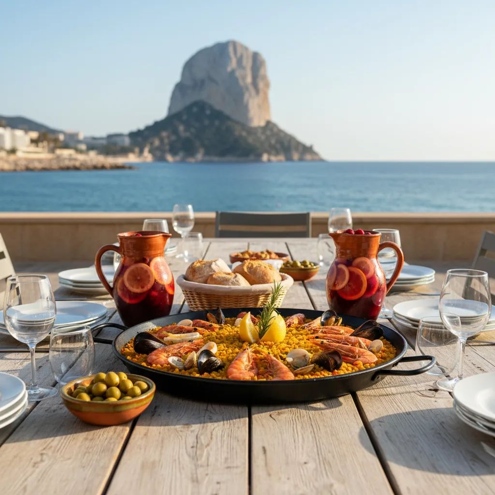

Paseo Arenal · Avenida Europa
Paellas y arroces en el paseo.
Cocina valenciana frente al Mediterráneo. Arroces hechos en su sartén, producto fresco del mar y mesa con vista al paseo de la playa del Arenal.
Cocina valenciana frente al Mediterráneo. Arroces hechos en su sartén, producto fresco del mar y mesa con vista al paseo de la playa del Arenal.

Cada arroz se hace en su sartén, al fuego que le toca, con caldo del día. Sin atajos, sin pre-cocinado, sin prisas. Como se ha hecho siempre en esta costa.
Algunos clásicos que entrarían en la carta:
Lista provisional. Los arroces exactos, ingredientes, tiempos y precios se completarían con vosotros.
Estructura provisional de la carta. Los platos exactos, descripciones y precios se definen con el equipo de Las Olas.
Para empezar la mesa. Producto del mar, encurtidos de la casa, conservas seleccionadas.
Lista a definirLa firma de la casa. Paella, arroz a banda, arroz negro, fideuá, sugerencias del día.
Lista a definirProducto de lonja según día. A la sal, a la espalda o a la plancha, según el pez y su tamaño.
Lista a definirCierre clásico de mediterráneo: dulces de cuchara, tartas caseras, frutas de temporada.
Lista a definirComposiciones de muestra para la futura sesión fotográfica. La sesión real se haría en Las Olas, con vuestras mesas, vuestros arroces y vuestro equipo.



Reservas, horarios y contacto. Los datos definitivos se completan con vosotros.